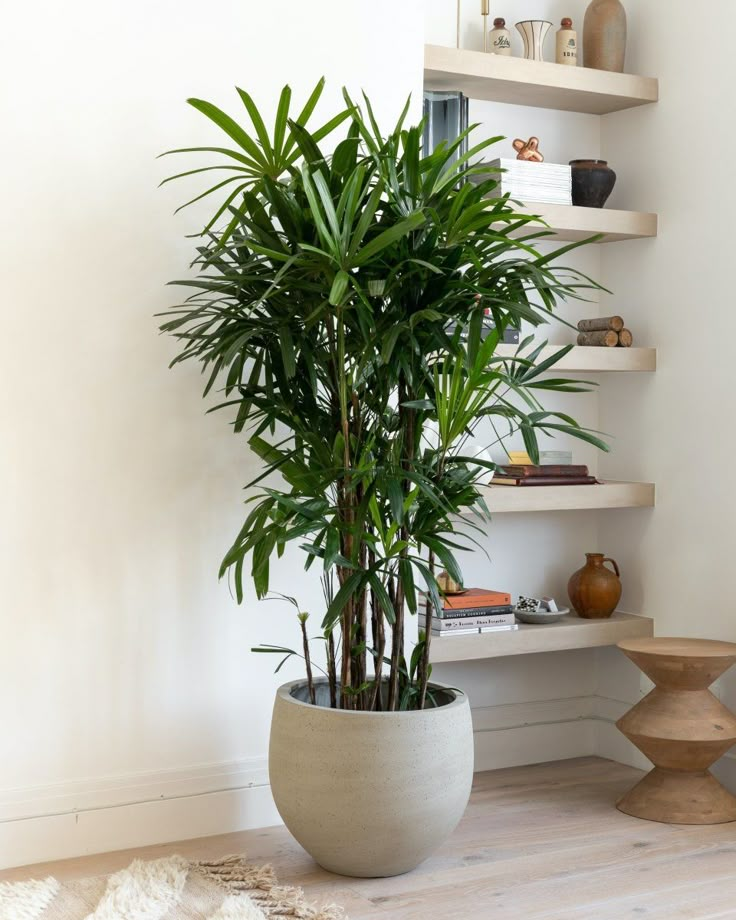

Bamboo Palm
Preparation:
- Bamboo palms prefer bright, indirect light or partial shade so choose a place with medium light.
- Use well-draining soil that is slightly acidic: mix with perlite, peat moss, and orchid bark works well for potted plants.
Placement:
- When planting, ensure the palm is planted at the same depth it was in its previous container.
- Fill back the hole with soil.
After the planting process:
- Water thoroughly to settle the soil around the roots.
- Keep the soil consistently moist but not soggy. Water when the top inch or two of soil feels dry, which is usually about once a week.
- Make sure to mist the leaves regularly.
- Trim off any brown or damaged leaves near the trunk.